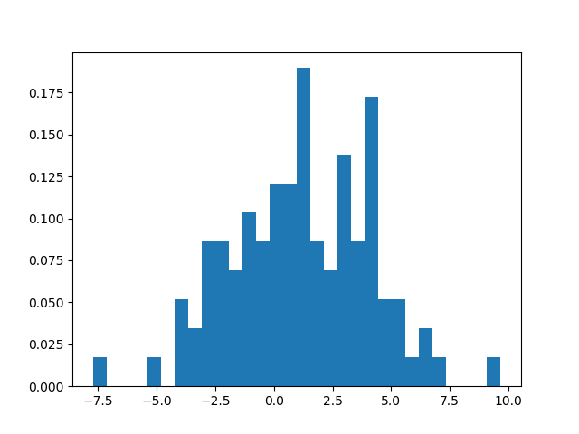
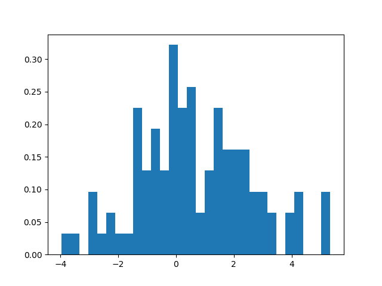
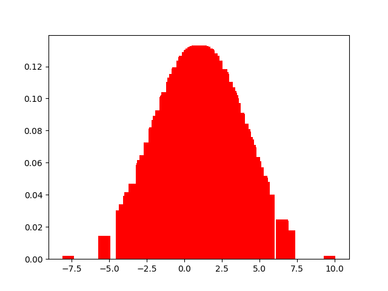
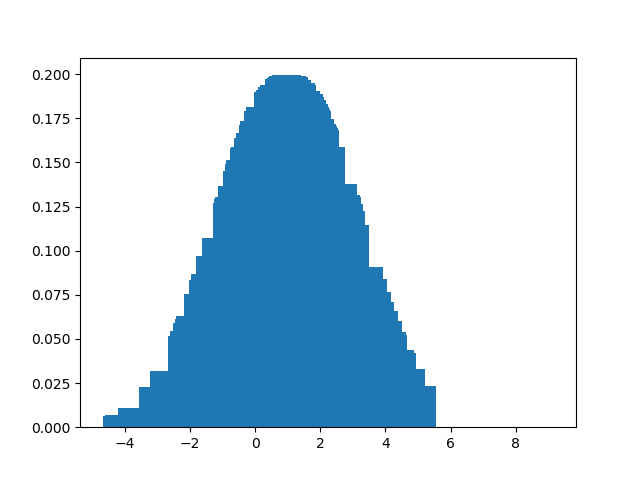

0. 前言
在用python实现正态分布等概率分布函数时，混淆了直方图和条形图，又由于概率论没学到位，导致实现中遇到了不小的困难。
因而，借此篇博客复习一下，高中所学的直方图和条形图。。。
1. 直方图
1.1. 理解
首先，举一个直方图的例子：

显然，直方图就是有很多根柱子的图。
假设，数据集合X是分布在实数集上的随机数集合，|X|=100。
对于直方图中的每个柱子：
其宽对应横轴上的一个区间；
其高对应集合X中属于该区间的数的个数。
频数分布直方图 (归一化直方图) 是直方图中的一种，它的特殊在于：
- 其高对应该区间的计数除以集合
X中的总数，即代表该区间的频数。
上述例子便是一张频数分布直方图。
1.2. python代码实现
1
2
3
4
5
6
7
8
9
10
11
| import numpy as np
from matplotlib import pyplot as plt
x = np.random.normal(1,2,100)
value, bins, count = plt.hist(x, bins=30, normed=True)
plt.show()
print('value:', value, len(value))
print('bins:', bins, len(bins))
print('count:', count)
|
输出：

1
2
3
4
5
6
7
8
9
10
11
12
| value: [0.03220688 0.03220688 0. 0.09662064 0.03220688 0.06441376
0.03220688 0.03220688 0.22544816 0.12882752 0.19324128 0.12882752
0.3220688 0.22544816 0.25765504 0.06441376 0.12882752 0.22544816
0.1610344 0.1610344 0.1610344 0.09662064 0.09662064 0.06441376
0. 0.06441376 0.09662064 0. 0. 0.09662064] 30
bins: [-3.97482069 -3.66432802 -3.35383536 -3.04334269 -2.73285002 -2.42235735
-2.11186468 -1.80137201 -1.49087934 -1.18038668 -0.86989401 -0.55940134
-0.24890867 0.061584 0.37207667 0.68256934 0.993062 1.30355467
1.61404734 1.92454001 2.23503268 2.54552535 2.85601801 3.16651068
3.47700335 3.78749602 4.09798869 4.40848136 4.71897403 5.02946669
5.33995936] 31
count: <a list of 30 Patch objects>
|
对于plt.hist()函数：
其详情见官网
2. 条形图
2.1. 理解
举个栗子：

条形图似乎也是一个很多柱子的图。这便是条形图与直方图容易混淆的原因了。但，条形图的柱子似乎细很多呢。
其实，条形图相对直方图，更好理解。
条形图中，横坐标代表x值，纵坐标代表y=f(x)值。所以，条形图的边界就是对应函数f(x)图像的一部分了。
2.2. python代码实现
1
2
3
4
5
6
7
8
9
10
11
12
13
14
| import numpy as np
from matplotlib import pyplot as plt
'''正态分布公式'''
def normal_distribution(mean, standard, x):
return (1 / (standard * np.sqrt(2*np.pi)) * np.exp(-(x-mean)**2 / (2 * standard**2)))
x = np.random.normal(1,2,100)
print('x:', x)
y = normal_distribution(1,2,x)
print('y:', y)
plt.bar(x, y)
plt.show()
|
输出：

1
2
3
4
5
6
7
8
9
10
11
12
13
14
15
16
17
18
19
20
21
22
23
24
25
26
27
28
29
30
31
32
33
34
35
36
37
38
39
40
41
42
| x: [ 1.76932332 0.36522094 5.1450445 0.05004145 1.7720948 2.72576013
-0.10808016 1.89746125 3.63410412 2.91262325 4.10054093 -0.89758685
1.11546737 4.27508464 0.76085493 1.47257128 4.5245259 2.34713613
-0.05875876 8.75851437 -0.86486252 -0.34872341 0.07018679 0.88436324
0.48392354 0.1297039 -0.59002276 3.10785551 1.3165206 2.71668659
2.11486526 -0.84586926 -0.3576636 2.09204617 0.53542808 4.48640303
-0.52501128 -2.04203587 -1.57609217 0.92228732 -2.28138689 1.92260707
1.94208858 3.98329461 -4.28621987 0.0471915 -4.21319167 0.80202259
3.875302 2.73255094 -1.40581636 1.17265753 -2.22711288 1.1008017
1.87824436 3.10236217 1.43048658 1.00748939 4.80039664 0.8898163
2.82500036 1.7141756 -1.2301184 1.16866276 1.66890047 0.6901983
1.42811743 1.22482293 -0.25517217 1.78918545 -2.82314372 -1.79081425
-0.48748191 2.9755605 -2.07325393 1.17953198 3.76772486 0.41385189
0.83417547 1.15602977 -3.80374808 -1.63877772 2.14545695 3.10734999
-3.17789913 1.86693313 0.41279216 2.02547252 1.60170928 1.83176309
4.23187971 -0.3603266 -0.73596668 1.21855677 -2.12121712 -0.20157449
0.06652799 2.84224194 2.15910299 3.5127497 ]
y: [1.85246481e-01 1.89672995e-01 2.32893302e-02 1.78192943e-01
1.85147586e-01 1.37467642e-01 1.71089936e-01 1.80366335e-01
8.37935889e-02 1.26267617e-01 5.99793484e-02 1.27175126e-01
1.99138981e-01 5.21903254e-02 1.98050247e-01 1.93979816e-01
4.22195850e-02 1.58987025e-01 1.73390851e-01 1.07673843e-04
1.29147548e-01 1.58902008e-01 1.79038432e-01 1.99138006e-01
1.92939699e-01 1.81452272e-01 1.45423186e-01 1.14467130e-01
1.96988707e-01 1.38005420e-01 1.70767673e-01 1.30290347e-01
1.58422143e-01 1.71846040e-01 1.94161674e-01 4.36539516e-02
1.49151436e-01 6.27351432e-02 8.70200197e-02 1.99320615e-01
5.19214540e-02 1.79337425e-01 1.78524921e-01 6.55729800e-02
6.06572758e-03 1.78072195e-01 6.67586408e-03 1.98496245e-01
7.09694403e-02 1.37064685e-01 9.67543721e-02 1.98729228e-01
5.42654299e-02 1.99217948e-01 1.81137321e-01 1.14798536e-01
1.94903532e-01 1.99469742e-01 3.27955468e-02 1.99168661e-01
1.31543984e-01 1.87150614e-01 1.07124430e-01 1.98763102e-01
1.88621259e-01 1.97092356e-01 1.94953096e-01 1.98214821e-01
1.63814947e-01 1.84531071e-01 3.20922985e-02 7.53458647e-02
1.51274227e-01 1.22463700e-01 6.12557886e-02 1.98669094e-01
7.65643798e-02 1.91085957e-01 1.98786691e-01 1.98865040e-01
1.11469968e-02 8.35358669e-02 1.69298023e-01 1.14497623e-01
2.25067310e-02 1.81584831e-01 1.91056259e-01 1.74901040e-01
1.90644952e-01 1.82945965e-01 5.40569843e-02 1.58278875e-01
1.36861850e-01 1.98283670e-01 5.90225768e-02 1.66533569e-01
1.78885926e-01 1.30508407e-01 1.68633817e-01 9.05978680e-02]
|